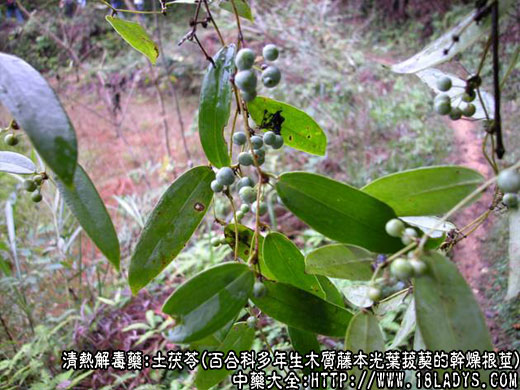
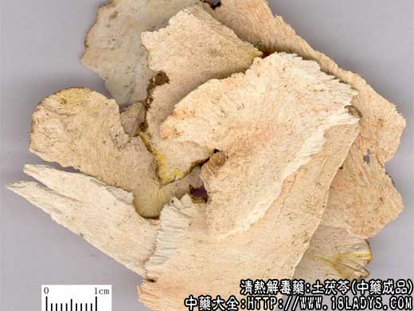
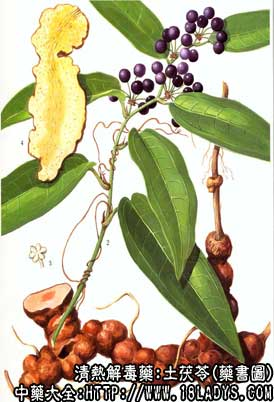

土茯苓为较常用中药，《本草纲目》列入草不蔓草类。现商品分红白两种。京津两市习用红土茯苓。
别名：山奇粮，冷饭团，禹余粮（江苏、浙江），土太片（江西）。
来源：红茯苓为百合科多年生木质藤本植物土茯苓（光叶菝葜）的干燥根茎。白土茯苓为肖菝葜的干燥根茎。均为野生。
产地：红土茯苓主产于广东、广西、浙江、江苏、四川、湖南等省，江南各省均产。白土茯苓主产于四川、陕西、广西等地。
性状鉴别：红土茯苓个：为不规则的块状，略呈圆柱形，拘挛弯曲，有分枝多结节状隆起，大小不等。一般长5～15厘米，直径约2～5厘米。表面棕色，有茎痕和须根痕。质坚硬，体略轻，不易折断。断面淡棕色或粉白色，不甚平滑，似细砂状，含粉性。气无味甘淡。
红土茯苓片：为不规则的片状，一般厚度约1～3厘米，大小宽窄不一，边缘弯曲不齐。表皮棕黑色，切面淡棕色或粉色，光滑或稍显粗糙，有维管束点，仔细观察可见亮星（草酸钙晶体）。纵切片可见导管形成的花纹。质较软而稍有韧性和弹性。干燥者脆而易折断。折断时有粉尘飞出，含粉质。水湿后手摸有光滑感。水煎后产生粘液汁。气无，味甘淡。
以棕红色，块大，粉性足者为佳。
白土茯苓片：形态略与红土茯苓片相似。唯加工切片时已削去表皮，片全体呈白色或黄白色，中心黄色纤维性小，含粉质较多，质地较细，体轻脆易折断，气微，味微甘苦。
以片大而薄，色白，粉性足者为佳。
主要成分：含甾体皂甙，主为薯蓣皂甙元、替告皂甙元、鞣质等。
药理作用：有解毒、利尿等作用。
炮制：切片，生气用。
性味：甘、淡、平。
归经：入肝、胃、肾经。
功能：利湿热，解毒。
主治：梅毒恶疮，痈肿溃烂，筋骨拘挛，汞中毒。
临床应用：现主要用于治疗反复发作的慢性湿疹，配银花、连翘、蒲公英等；也用于治疗慢性湿疹和其它慢性皮肤病，如牛皮癣等，有一定效果，常配生地、赤芍、地肤子等。治急性肝炎有时也用土茯苓辅助其它药。
又土茯苓与菝葜为同属植物，两者功用颇为近似。近年来，据报道菝葜已试用于治疗多种癌变，主要是消化道癌（食管癌、胃癌、直肠癌），对一些病例改善症状有所帮助。在实验研究方面，也发现菝葜能抑制动物一些移植性肿瘤的生长。至于土茯苓，对于治疗肿瘤是否也有一定帮助，还有待今后研究。本节在鱼腥草项曾介绍以土茯苓配鱼腥草、冬葵子等试用于肺癌，但效果尚待进一步观察。
此外，还有一定要注意的，作为菝葜入药的同科同属的植物有许多种，常见的有金刚头（也叫做金刚藤）、小萆薢、刺菝葜等。
用量：土茯苓15～30g。菝葜常用量30～60g、大剂500～750g（用于抗癌）。
处方举例：菝葜0.5kg（药物用于干燥根茎），先浸于3～3.5kg水中一小时，然后连同浸液温火煎三小时，去渣，加肥肉60g，再煎一小时，煎得浓缩药液二小碗（约500毫升），一天内数次饮用药汁，治胃食管等（福州市第一医院）。